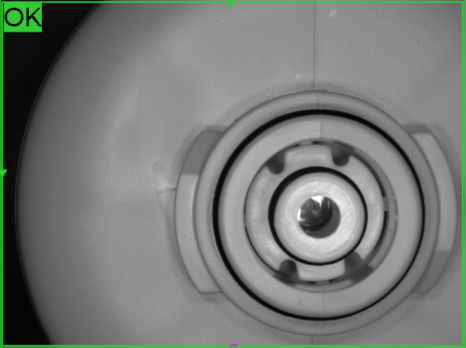

조건과 좌표 중심 검사
- 고정 검사영역
- 위치·회전 보정
- 조건 분기
- 예외처리
Manufacturing · Cognex AI Classification
Fixture 없이 위치와 방향이 달라지는 필터 제품의 O-Ring 조립 상태를 Cognex AI Classification으로 판정한 사례
필터에 조립되는 O-Ring의 유무와 조립 상태를 자동 판정하기 위해 Cognex AI Classification을 적용했습니다. 제품을 정밀하게 고정하는 Fixture가 없어 촬영할 때마다 위치와 방향에 편차가 발생했고, 고정 좌표와 조건에 의존하는 Rule-Based 검사로는 안정적인 판정과 유지보수가 어려웠습니다. 실제 생산 이미지를 기반으로 정상·불량을 학습하여 위치 Variation에 대응하면서 기존 생산라인의 택타임을 유지할 수 있도록 AI 비전검사 시스템을 구성했습니다.

Project Summary
Project Photos
01 · Overview
O-Ring과 같은 소형 조립부품은 제품 성능과 밀폐 품질에 직접 영향을 줄 수 있기 때문에 조립 유무와 상태를 안정적으로 확인해야 합니다.
이번 프로젝트의 검사 대상은 필터 제품에 조립되는 O-Ring이었습니다. 기존 공정에서는 작업자가 직접 O-Ring 상태를 확인하거나 Rule-Based 머신비전 검사를 사용하는 방식을 검토하고 있었습니다.
그러나 제품을 정밀하게 고정하는 Fixture가 없는 구조였기 때문에 촬영할 때마다 제품 위치와 방향, 촬영 영역에 미세한 편차가 반복적으로 발생했습니다.
ASPEC은 고정된 검사영역과 다수의 조건을 계속 추가하는 것보다 이미지 특징을 학습해 정상과 불량을 구분하는 AI Classification 방식이 적합하다고 판단하고, 필터 O-Ring 조립 상태를 자동 판정하는 시스템을 구축했습니다.
02 · Challenge
이번 프로젝트의 핵심은 O-Ring 자체를 찾는 것뿐 아니라 제품의 위치와 방향이 달라지는 상황에서도 검사 기준을 일정하게 유지하는 것이었습니다.
제품 위치를 완전히 고정할 수 있다면 특정 좌표에 검사영역을 설정하는 방식으로 접근할 수 있지만, 이번 공정에서는 실제 생산 과정에서 발생하는 위치와 방향 Variation을 검사 시스템이 일정 범위 안에서 받아들일 수 있어야 했습니다.
03 · Rule-Based
Fixture를 이용해 제품 위치와 각도를 일정하게 유지하면 검사 영역을 고정하기 쉬워집니다. 반대로 제품이 자유롭게 놓이는 환경에서는 촬영할 때마다 O-Ring의 위치와 방향이 이미지상에서 달라질 수 있습니다.
이번 생산라인에서는 제품 중심 위치, 방향, 촬영영역과 외관의 변화가 함께 발생할 수 있었습니다. Rule-Based 방식으로 대응하려면 제품 위치 검색, 좌표와 회전각 보정, O-Ring 검사영역 재설정, 밝기 보정과 예외조건이 계속 늘어날 수 있었습니다.
Rule-Based 검사가 적합하지 않다는 의미가 아니라 이번 공정의 위치 Variation과 유지보수 구조를 고려했을 때 정상과 불량의 시각적 차이를 이미지 Classification으로 학습하는 방식이 더 적합하다고 판단했습니다.
검사 특성에 따라 Rule-Based 방식이 더 적합한 경우도 있으며, 이번 프로젝트에서는 위치 Variation과 검사 구조를 고려해 AI Classification을 선정했습니다.
※ 필요한 학습 이미지 수는 제품 및 검사 난이도에 따라 달라집니다.
04 · Inspection
이번 시스템에는 Cognex AI Classification을 적용했습니다. 실제 생산환경에서 취득한 정상(OK) 이미지와 불량(NG) 이미지를 사용하여 O-Ring 조립 상태를 학습했습니다.
고정된 검사 위치 하나만 보는 대신 정상 제품과 불량 제품에서 나타나는 이미지 특징을 기반으로 상태를 분류하고, Fixture가 없는 생산조건에서 발생하는 정상적인 위치와 방향 Variation을 학습 및 검증 과정에 반영했습니다.
확인되지 않은 Confidence Score나 정확도 수치는 사용하지 않았습니다.
05 · Inspection
이번 프로젝트의 검사 목적은 단순한 제품 분류가 아니라 필터에 조립되는 O-Ring의 유무와 조립 상태를 자동으로 판단하는 것이었습니다.
현재 확인된 범위인 O-Ring 정상 조립과 O-Ring 미조립 또는 검사 기준상 불량 상태만 표현했으며, 제공되지 않은 세부 불량 유형은 추가하지 않았습니다.
06 · Inspection
AI 비전검사에 필요한 이미지 수는 제품 특징, 불량 종류, 정상 Variation, 촬영환경과 검사 난이도에 따라 크게 달라집니다. 모든 AI 프로젝트를 동일한 이미지 수로 학습할 수 있는 것은 아닙니다.
이번 필터 O-Ring 검사에서는 정상과 불량을 구분하는 특징이 비교적 명확했고 실제 생산환경의 촬영조건을 적절하게 구성할 수 있어 10장 미만의 학습 이미지로 Classification 모델을 구성했습니다. 이는 이번 프로젝트의 실제 결과이며 다른 프로젝트의 일반적인 학습 기준을 의미하지 않습니다.
이미지 개수보다 검사 중 발생하는 중요한 Variation이 학습 데이터에 포함되는지를 확인하고 실제 생산 이미지로 분류 결과를 검증하며 모델을 조정했습니다.
07 · Inspection
제품이 Fixture로 완전히 고정되지 않았기 때문에 촬영될 때마다 이미지상의 위치와 방향이 조금씩 달라졌습니다. 고정 좌표에 강하게 의존하는 검사는 이러한 변화가 안정성에 영향을 줄 수 있습니다.
이번 AI 모델은 실제 생산환경에서 발생하는 정상 범위의 위치 및 방향 변화를 학습과 검증 과정에 포함하여 해당 Variation 안에서 O-Ring 조립 상태를 판별하도록 구성했습니다. 제품이 어디에 있어도 검사할 수 있다는 의미가 아니라 검증된 생산 범위의 Variation에 대응한 것입니다.
08 · Production Tact Time
생산라인에 AI 검사를 적용하려면 분류 성능뿐 아니라 처리시간도 함께 검토해야 합니다. AI 검사시간이 기존 설비의 택타임보다 길면 실제 자동화 공정에 적용하기 어렵습니다.
이번 프로젝트에서는 Cognex AI Classification 적용 후에도 기존 Rule-Based 검사와 비교해 생산에 영향을 줄 정도의 큰 처리시간 차이가 발생하지 않도록 시스템을 구성했습니다. 이를 통해 기존 생산라인의 택타임을 유지하면서 AI 기반 O-Ring 검사를 적용했습니다.
현재 제공된 프로젝트 자료에는 정확한 ms, 초 또는 FPS 수치가 없어 임의의 검사시간은 표시하지 않았습니다.
09 · Maintenance
생산용 비전검사는 초기 구축뿐 아니라 이후 제품이나 생산조건이 변할 때 어떻게 대응할지도 중요합니다. Rule-Based 조건이 복잡해질수록 검사영역과 파라미터를 수정해야 하는 항목이 늘어날 수 있습니다.
AI Classification은 새로운 정상 Variation이나 검사 조건 변화가 발생했을 때 실제 이미지를 검토하고 필요한 경우 모델에 반영할 수 있습니다. 다만 이미지를 추가하기만 하면 되는 것은 아니며 변경된 모델이 실제 생산조건에서 정상적으로 동작하는지 재검증해야 합니다.
10 · Workflow
11 · Result
필터에 조립되는 O-Ring의 유무와 조립 상태를 머신비전으로 자동 판정하도록 구성했습니다.
Fixture가 없는 환경에서 발생하는 정상 범위의 제품 위치와 방향 변화를 고려해 AI 모델을 구성했습니다.
다수의 위치 보정과 예외조건을 계속 추가하는 대신 AI Classification으로 검사 구조를 단순화했습니다.
AI 검사를 적용하면서도 기존 생산라인의 택타임을 유지하도록 시스템을 구성했습니다.
12 · Application
이번 프로젝트는 AI가 Rule-Based 검사보다 항상 우수하다는 사례가 아닙니다. 치수 측정, 정밀 위치 측정, 명확한 Edge 검사처럼 조건을 수치나 규칙으로 정의할 수 있는 경우에는 Rule-Based 방식이 더 효율적일 수 있습니다.
반면 Fixture가 없어 제품 위치와 방향이 일정하지 않고, 정상과 불량은 이미지로 구분되지만 Rule-Based 예외조건이 계속 증가하는 이번 환경에서는 Classification 방식이 효과적인 대안이었습니다. ASPEC은 프로젝트마다 실제 제품과 검사 조건을 기준으로 적합한 방법을 선택합니다.
13 · Engineering
AI 비전검사는 AI Tool을 선택하는 것으로 끝나지 않습니다. ASPEC은 실제 샘플과 생산환경을 기준으로 Rule-Based 방식과 AI 방식의 적용 가능성을 먼저 비교합니다.
AI가 적합한 경우에도 검사 목적에 따라 Classification, Detection, Segmentation 등 서로 다른 방식을 검토합니다. 이번 프로젝트에서는 Fixture가 없는 환경의 위치·방향 Variation과 복잡해지는 Rule-Based 조건을 고려하여 Cognex AI Classification을 적용했습니다.
08 · Related Cases
제품 위치나 방향이 일정하지 않거나 정상·불량의 차이를 규칙으로 정의하기 어려워 검사 조건이 계속 복잡해지는 경우 AI Classification을 포함한 비전검사 방식을 검토할 수 있습니다. 실제 정상·불량 샘플과 생산환경, 검사 항목, FOV, WD 및 택타임을 알려주시면 Rule-Based 방식과 AI 방식의 적용 가능성을 비교하여 적합한 검사 구성을 검토해드립니다.